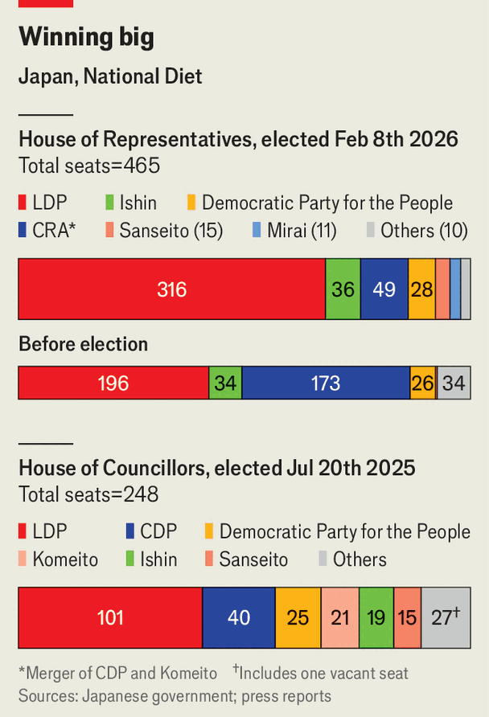

Asia | Takaichi’s triumph
How Japan’s prime minister will use her massive new mandate
A remarkable election victory that will reshape Japanese politics for years to come
February 12th 2026
Editor’s note: This story has been updated.
AS A YOUNG WOMAN, Takaichi Sanae took a liking to motorcycles, even showing up to an admissions interview on her Kawasaki. As Japan’s prime minister, Ms Takaichi has also proven a bold risk-taker: she gambled by calling snap elections for the powerful lower house on February 8th, hoping that her personal appeal would lift her less popular Liberal Democratic Party (LDP). The bet paid off with the biggest election victory in Japan’s post-war history, giving the LDP a commanding two-thirds supermajority.
The remarkable result has the potential to reshape Japanese politics for years to come. Ms Takaichi, who is both a fiscal dove and a security hawk, now has a massive personal mandate. Potential challengers inside the party will fall silent. The LDP, which has stumbled in recent years, has returned to a position of unquestioned supremacy. It will be able to control the legislative process, as it can override the more fractious upper house (where it lacks a majority), thanks to its supermajority. It is the political equivalent of going from a 50cc scooter to a souped-up Kawasaki. Ms Takaichi thus has a chance to get Japan racing again. But obstacles loom.
The scale of Ms Takaichi’s triumph shocked even LDP insiders. The LDP and its coalition partners entered with a one-seat majority in the 465-seat chamber. Though Ms Takaichi, who took office last October, enjoyed high approval ratings, a string of scandals had tarnished the party’s image. Ms Takaichi set the bar for victory at retaining a simple coalition majority. The LDP instead won big across every region and every age group, coming away with 316 seats on its own. It could have had 14 more, but was forced to cede them because there were not enough names on its party lists. (Around 60% of Japan’s Diet members are elected in first-past-the-post single-member districts; the others enter through proportional representation.) The LDP is now scrambling to train lots of novice MPs. “We have a whole bunch of first-graders coming into the classroom,” one LDP lawmaker says.
Two phenomena explain the outcome. One is Ms Takaichi’s personal popularity, which has proven a potent force. On the campaign trail, she electrified audiences, drawing crowds of thousands to concert-like rallies. She also dragged her fusty party into the digital era, becoming a star of social media. For those tired of the old guard, she exemplifies change. The country’s first female prime minister, she has cut a welcome contrast to previous ones, thanks to her middle-class upbringing (her father worked for a carmaker, her mother for the police) and plain-spoken style. She played drums in a heavy-metal band at university. “Everyone in Japan gets to see themselves in her,” says Eri Arfiya, an LDP lawmaker. Yet she also stands for security, reaching voters anxious about Japan’s place in an increasingly dangerous world. “Toughness has its appeal now in Japan, just as much as it has elsewhere around the world,” says Michael Cucek of Temple University in Tokyo.

The other is the complete collapse of the opposition. A hasty pre-election merger of the centre-left Constitutional Democratic Party (CDP) and the LDP’s former coalition partner, Komeito, into the Centrist Reform Alliance (CRA) produced a muddle, not synergy. Its nostalgic appeals to pacifism rang hollow. The new bloc acquired the unflattering nickname “5G”, a play on the Japanese word for “old man”, oji-san, in reference to the fact that its top officials were all older male political dinosaurs. The CRA fell from having 172 seats to just 49. “One plus one did not make two,” the CRA’s co-leader admitted after the drubbing. (He has since resigned.)
Upstart parties proved more dynamic. The populist-right Sanseito (Do It Yourself) party emerged with 15 seats. Mirai (Team Future), a techno-optimist grouping founded last May, broke through as an alternative for many independent voters, winning 11 seats. But none will be strong enough to challenge the LDP.
With its commanding majority, the LDP will be able to blow past most checkpoints the opposition throws up. Ms Takaichi declares she has set a course for making Japan “stronger” and “prosperous”. The former involves reforms to strengthen Japan’s armed forces and security apparatus, in response to China’s rise and America’s unreliability. In this respect she is following the path laid out by her mentor, the late Abe Shinzo, who was prime minister from 2012-20, says Kanehara Nobukatsu, who held senior posts in the Abe administration.
Ms Takaichi has already accelerated the timeline for planned increases in defence spending to 2% of GDP. (That will please Donald Trump, whom Ms Takaichi will visit in Washington next month.) She has called for lifting restrictions on arms exports to help boost Japan’s defence industry; she favours the creation of a new national intelligence agency. She may now try to achieve the long-standing conservative goal of revising Japan’s constitution, which prohibits possessing “war potential”. For that, however, she will need two-thirds of the upper house, and a majority of the public in a referendum, to agree.
Despite her admiration for Margaret Thatcher, Ms Takaichi sees the path to prosperity running through the state. She wants to spend big on strengthening supply chains: she has set out 17 areas of critical national interest that deserve support with industrial policy. The fiscal doves in her camp believe that with GDP now growing and tax revenues rising, Japan has more fiscal space than a net debt pile equivalent to 130% of GDP would suggest. Aware that bondholders may disagree, Ms Takaichi promises to be “responsible” as well as “proactive” in her fiscal policy. While pursuing a big-spending agenda, she also hopes to offer households relief from inflation. The aims are obviously in tension.
Markets thus present the first obstacle to realising her vision. During the campaign she promised to temporarily suspend the sales tax on food for two years—without issuing new debt. “That would be a magic trick,” quips Shirai Sayuri, a former policy board member at the Bank of Japan. “Her promises are not consistent, there are lots of constraints.” Although yields on Japanese government bonds remained stable after the elections, investors will be watching closely to see how Ms Takaichi’s plans add up.
Ms Takaichi’s ideology may also get in her way. She has a nationalist streak that may strain relations with neighbours. She believes that Japan has been excessively remorseful for its 20th-century imperialism. Such historical revisionism is often expressed by visiting the controversial Yasukuni Shrine, which honours Japan’s war dead, including its imperial leaders. Ms Takaichi has visited in the past, but has so far refrained from going as prime minister, though she talked of doing so during the campaign. That would exacerbate an ongoing crisis in relations with China. It would also wreck a rapprochement with South Korea that is crucial to countering Chinese ambitions in Asia.
If Ms Takaichi can navigate smoothly, she could prove as consequential as she is popular. “Tremendous opportunity lies on the road ahead,” says the LDP lawmaker. Yet voters’ expectations are now equally large. If she fails to deliver on her myriad promises, says a former MP from the LDP, “she’s going to hit a wall.” ■